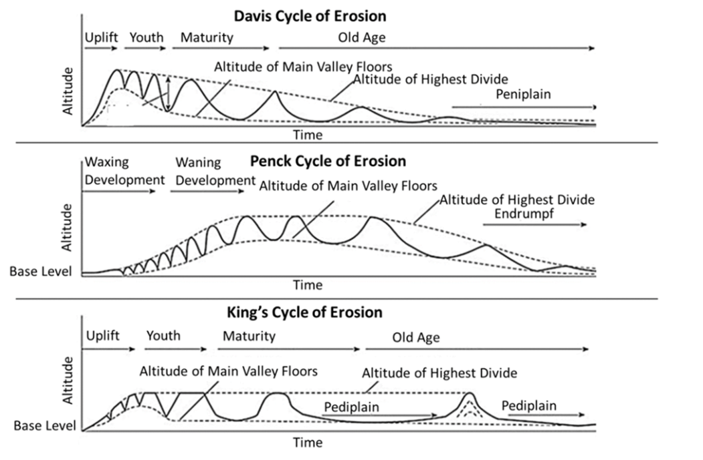

Teorías Clásicas de la Evolución de Laderas#
El debate sobre cómo evolucionan las laderas a lo largo del tiempo geológico es uno de los pilares de la geomorfología. Tres modelos conceptuales, propuestos por William Morris Davis, Walther Penck y Lester Charles King, representan las perspectivas clásicas y a menudo contrapuestas sobre este proceso. Aunque la geomorfología moderna se ha movido hacia enfoques más cuantitativos, estos modelos fundamentales siguen siendo cruciales para entender el pensamiento geomorfológico.
Importante
Objetivos de aprendizaje:
Comparar los mecanismos de evolución de laderas propuestos por Davis (decline), Penck (replacement) y King (parallel retreat).
Identificar la influencia de la tectónica y el clima en la formulación de cada teoría histórica.
Reconocer las geoformas residuales características de cada modelo (Monadnocks e Inselbergs).
Analizar la aplicabilidad de estos modelos en el contexto de los Andes colombianos.


Figura 3 Teorías y procesos del desarrollo de laderas.#
1. William Morris Davis: El Ciclo Geográfico y el Declive de la Pendiente#
William Morris Davis (1850-1934) fue un geógrafo y geólogo estadounidense que trabajó principalmente en la región de Nueva Inglaterra, en el este de los Estados Unidos. Su modelo [Davis, 1899] fue influenciado por este paisaje húmedo y templado, de tectónica pasiva, caracterizado por colinas redondeadas y un espeso manto de regolito.
El Modelo: Slope decline (Reducción de la pendiente)#
La teoría de Davis, conocida como el Ciclo Geográfico o Ciclo de Erosión, postula que la evolución del paisaje es una función del tiempo. Su modelo de laderas asume un evento de levantamiento tectónico inicial, rápido y de corta duración, seguido por un largo período de quietud tectónica durante el cual el paisaje es desgastado.
Juventud: Tras el levantamiento, los ríos comienzan a incidirse rápidamente, creando valles en “V” con laderas de pendiente máxima. La erosión es predominantemente vertical.
Madurez: La erosión fluvial se vuelve más lateral y los valles se ensanchan. Crucialmente, las laderas comienzan su proceso de reducción. La parte superior de la ladera (divisoria) se redondea y pierde altura, y el ángulo general de la pendiente disminuye progresivamente. El perfil se vuelve más suave y convexo-cóncavo. El proceso dominante es el downwearing o desgaste vertical del paisaje.
Senectud: El relieve se reduce drásticamente. Las laderas son muy suaves y de baja pendiente, y los valles son extremadamente anchos.
El producto final del ciclo de Davis es la peneplanicie (Peneplain), una superficie de muy bajo relieve, suavemente ondulada, que se encuentra cerca del nivel de base. Es el resultado del desgaste casi completo del paisaje inicial. El cerro remanente se denomina Monadnock. El término proviene del Monte Monadnock en Nuevo Hampshire (EE. UU.), una montaña aislada que se eleva sobre la peneplanicie de Nueva Inglaterra. Se caracteriza por tener laderas suaves y convexas, en consonancia con la teoría del declive de la pendiente.
2. Walther Penck: Tectónica y reemplazo de la pendiente#
Walther Penck (1888-1923) fue un geólogo alemán cuya experiencia en los Andes moldeó fundamentalmente su pensamiento. Su trabajo [Penck, 1924] fue una respuesta directa al modelo davisiano, criticando la separación entre un levantamiento inicial y una erosión posterior.
El Modelo: Slope replacement (Reemplazo de la pendiente)#
El modelo de Penck es dinámico y se centra en la interacción continua entre las tasas de levantamiento (U) y las tasas de denudación (D). Para él, la forma de la ladera es un indicador directo de la actividad tectónica.
Desarrollo ascendente (Waxing Development, U > D):** Cuando el levantamiento supera a la denudación, las laderas se vuelven progresivamente más empinadas y el perfil se hace convexo.
Desarrollo Uniforme (Uniform Development, U = D): Si las tasas se igualan, las laderas alcanzan un ángulo de equilibrio y retroceden paralelamente a sí mismas (parallel retreat).
Desarrollo Descendente (Waning Development, U < D): Cuando la denudación supera al levantamiento, las pendientes se suavizan y el perfil se vuelve cóncavo.
El mecanismo clave es el reemplazo de la pendiente desde la base. Una unidad de pendiente más suave en la base de la ladera se expande hacia arriba, reemplazando a la unidad más empinada que se encuentra por encima. Es un proceso de backwearing o retroceso.
La superficie final de Penck es el Endrumpf (término alemán para “tronco final”), una superficie de bajo relieve formada bajo condiciones de estabilidad tectónica, pero como resultado de un proceso de reemplazo y no de desgaste generalizado. El cerro remanente se conoce como Inselberg. Este término alemán significa literalmente montaña isla. En el contexto de Penck, se refiere a los relieves residuales escarpados que se mantienen mientras las laderas retroceden y son reemplazadas.
3. Lester Charles King: Clima y retroceso paralelo#
Lester Charles King (1907-1989) fue un geólogo británico-sudafricano que pasó la mayor parte de su carrera en África meridional y central. Sus teorías [King, 1953] derivan de sus observaciones en paisajes de sabana y semiáridos, dominados por escarpes abruptos (scarps), mesas y extensas planicies rocosas.
El Modelo: Parallel retreat (Retroceso Paralelo)#
El modelo de King es principalmente un modelo de retroceso paralelo de escarpes. Es fuertemente dependiente del clima y la litología.
Formación del Escarpe: Un escarpe o “cara libre” (free face) se forma, usualmente limitado por una capa de roca resistente.
Retroceso Paralelo: El escarpe mantiene un ángulo constante a medida que retrocede. Esto ocurre porque la meteorización descompone la roca del escarpe, y el material resultante es evacuado de la base por procesos fluviales o de lavado superficial. Si el material no es evacuado, se acumula un talud (debris slope) que puede cubrir la base del escarpe.
Formación del Pedimento: A medida que el escarpe retrocede, deja tras de sí una superficie suavemente inclinada y de baja pendiente, típicamente una rampa rocosa con una fina capa de sedimentos. Esta superficie es el pedimento. El proceso clave es el backwearing, donde la ladera retrocede sin perder su ángulo característico. La etapa final del ciclo de King es la pediplanicie, una vasta superficie de erosión formada por la coalescencia de múltiples pedimentos a medida que los escarpes retroceden y las tierras altas intermedias son consumidas por completo. El término para los cerros residuales también es Inselberg. De hecho, es en el modelo de King donde el concepto de inselberg tiene su máxima expresión. Son cerros de laderas muy abruptas que se elevan drásticamente desde la pediplanicie circundante, típicos de los paisajes de sabana y semiáridos que King estudió en África.
Diferencias Fundamentales#
Característica |
William Morris Davis |
Walther Penck |
Lester Charles King |
|---|---|---|---|
Mecanismo Principal |
Slope decline (Declive) |
Slope replacement (Reemplazo) |
Parallel retreat (Retroceso) |
Proceso Dominante |
Downwearing (Desgaste vertical) |
Backwearing (Retroceso) |
Backwearing (Retroceso) |
Influencia Clave |
Tiempo y ciclo de vida |
Tasa de levantamiento vs. denudación |
Clima (aridez) y litología |
Ángulo de Ladera |
Disminuye con el tiempo |
Varía con la tectónica |
Permanece constante |
Perfil Típico |
Convexo-Cóncavo suavizado |
Convexo, recto o cóncavo |
Escarpe abrupto + pedimento |
Fase Final |
Peneplanicie |
Endrumpf |
Pediplanicie |
Cerros Residuales |
Monadnock |
Inselbergs |
Inselbergs |
Entorno Análogo |
Apalaches (EE.UU.) |
Andes (Sudamérica) |
Karoo (Sudáfrica) |
4. La Perspectiva Cuantitativa Moderna: Modelos de Evolución del Paisaje#
Los modelos de Davis, Penck y King comparten una limitación fundamental: son esquemas conceptuales y descriptivos, construidos a partir de la observación de paisajes en distintas etapas presumibles de un ciclo, pero no incorporan ecuaciones que relacionen explícitamente las tasas de los procesos con las variables físicas que los controlan (clima, litología, tectónica). La geomorfología cuantitativa que se desarrolló a partir de la segunda mitad del siglo XX buscó superar esta limitación combinando la observación de campo con las leyes de transporte geomórfico (ver Conceptos fundamentales en Geomorfología), dando origen a los Modelos de Evolución del Paisaje (Landscape Evolution Models, LEM) [Bierman and Montgomery, 2013].
Un LEM típico combina al menos dos leyes de transporte fundamentales que operan simultáneamente sobre una malla topográfica:
Difusión en laderas: \(\dfrac{\partial z}{\partial t} = \kappa \nabla^2 z\), que suaviza el relieve y redondea las divisorias (un proceso análogo al downwearing de Davis).
Incisión fluvial (Ley de la Potencia de Corriente): \(\dfrac{\partial z}{\partial t} = -KA^mS^n\), que profundiza los valles y genera relieve (un proceso análogo, en su efecto sobre el paisaje, al backwearing de Penck y King) [Bierman and Montgomery, 2013, Whipple and Tucker, 1999].
Al resolver estas ecuaciones numéricamente bajo distintos escenarios de levantamiento tectónico y clima, los LEM permiten poner a prueba, de forma reproducible, cuál de las intuiciones clásicas (declive, reemplazo o retroceso paralelo) se ajusta mejor a un paisaje real, y muestran que los tres comportamientos —lejos de ser mutuamente excluyentes— pueden coexistir en un mismo paisaje, dependiendo de la posición topográfica (divisorias vs. cauces) y del balance local entre levantamiento y denudación [Bierman and Montgomery, 2013].
La Curva Hipsométrica: Cuantificando el “Estado” de un Paisaje#
Davis clasificó los paisajes en etapas cualitativas (juventud, madurez, senectud) a partir de su aspecto general. La geomorfología cuantitativa ofrece una herramienta objetiva para expresar esta misma idea: la curva hipsométrica, que grafica la proporción de área de una cuenca que se encuentra por encima de una elevación relativa dada, y el integral hipsométrico (\(HI\)), el área bajo esa curva [Bierman and Montgomery, 2013, Strahler, 1957].
Etapa (Concepto de Davis) |
Forma de la Curva Hipsométrica |
Integral Hipsométrico (HI) |
Interpretación en Términos de Procesos |
|---|---|---|---|
Juventud |
Convexa |
HI alto (> 0.6) |
Poca erosión acumulada; predomina el volumen de roca por remover; superficies residuales amplias en las divisorias. |
Madurez |
Sigmoidal (en “S”) |
HI intermedio (0.35 – 0.6) |
Balance entre la remoción de masa en las partes altas y bajas de la cuenca; máxima disección del relieve. |
Senectud |
Cóncava |
HI bajo (< 0.35) |
La mayor parte del volumen original ya ha sido erosionado; predominan superficies bajas y planas cercanas al nivel de base. |
A diferencia de la clasificación puramente descriptiva de Davis, el integral hipsométrico puede calcularse directamente de un Modelo Digital de Elevación (DEM) y comparar objetivamente cuencas de tamaños y contextos climáticos distintos, o dar seguimiento a cómo cambia una misma cuenca en respuesta a perturbaciones tectónicas o climáticas, sin necesidad de asumir a priori un ciclo evolutivo único [Bierman and Montgomery, 2013].
Truco
En los Andes colombianos, cuencas con valores de HI altos suelen coincidir con sectores de levantamiento tectónico activo o litologías muy resistentes (ver Morfotectónica y geomorfología estructural), mientras que valores bajos se asocian a cuencas sobre las superficies de erosión más antiguas del Escudo Guayanés.
5. Superficies de Planación: el Legado Conceptual de los Modelos Clásicos#
Más allá de sus mecanismos particulares, los tres modelos clásicos comparten una predicción común: bajo condiciones de estabilidad tectónica prolongada, el relieve tiende hacia una superficie de muy bajo relieve cercana al nivel de base, denominada genéricamente superficie de planación (planation surface). La Encyclopedia of Geomorphology recoge y sistematiza la terminología asociada a este concepto, que en la práctica de campo suele generar confusión terminológica [Goudie, 2004]:
Peneplanicie (Peneplain): El término original de Davis para la superficie final de su ciclo geográfico, formada predominantemente por downwearing (desgaste vertical).
Pediplanicie (Pediplain): El término de King para la superficie final formada por la coalescencia de pedimentos, producto del retroceso paralelo de escarpes (backwearing).
Etchplain (Superficie de Etchado): Un tercer tipo de superficie de planación, reconocido más ampliamente desde mediados del siglo XX, que se forma por la meteorización química profunda del sustrato (ver Meteorización: procesos, perfiles y geoformas) seguida de la remoción erosiva del regolito, exhumando una superficie de roca fresca (la “etch surface”) que puede conservar un relieve residual irregular controlado por la profundidad previa de meteorización, en lugar de la superficie perfectamente plana que implican los modelos de Davis o King [Goudie, 2004].

Figura 4 Peneplanicie, pediplanicie y etchplain (superficie de meteorización enmantada y etchplain exhumado con inselberg).#
Esta distinción entre peneplanicie, pediplanicie y etchplain es especialmente relevante en el contexto tropical de este libro: en climas húmedos y cálidos como los de buena parte de Colombia, la meteorización química profunda (ver Meteorización: procesos, perfiles y geoformas) es tan intensa que muchas superficies de bajo relieve descritas en el paisaje no son el resultado de un desgaste o retroceso puramente mecánico, sino de la exhumación de un frente de meteorización irregular, lo que las clasificaría más apropiadamente como etchplains que como peneplanicies o pediplanicies en el sentido estricto de Davis o King [Goudie, 2004, Shroder, 2013].